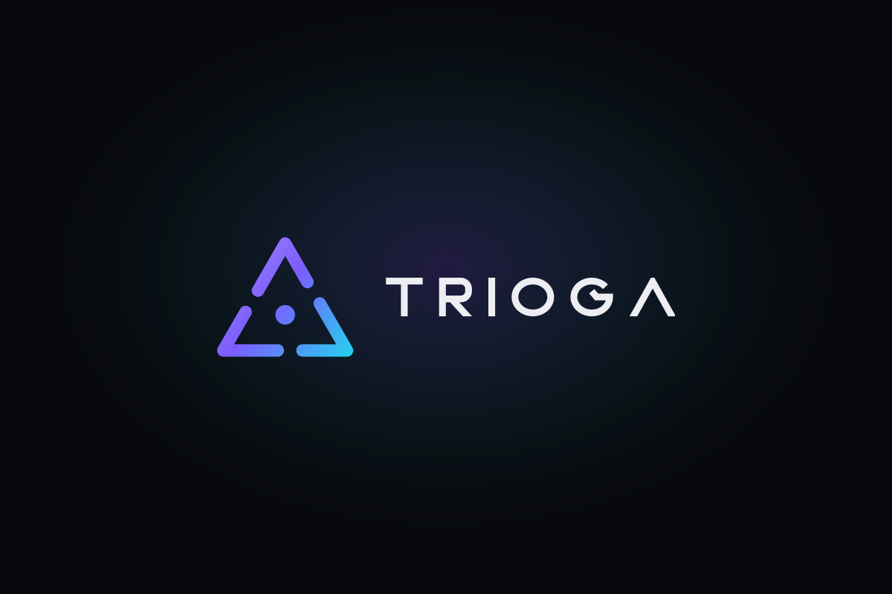
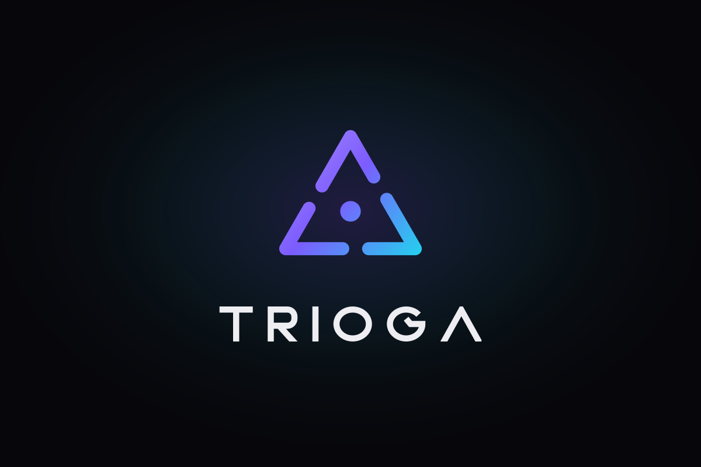
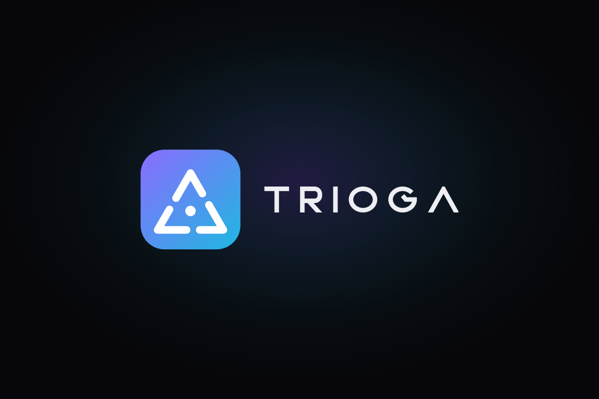
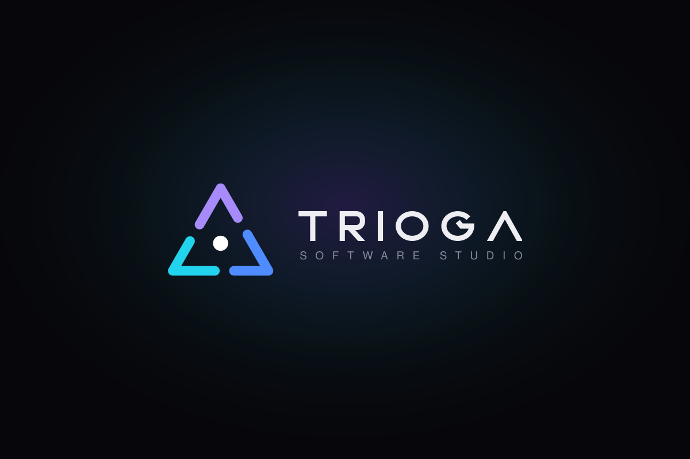
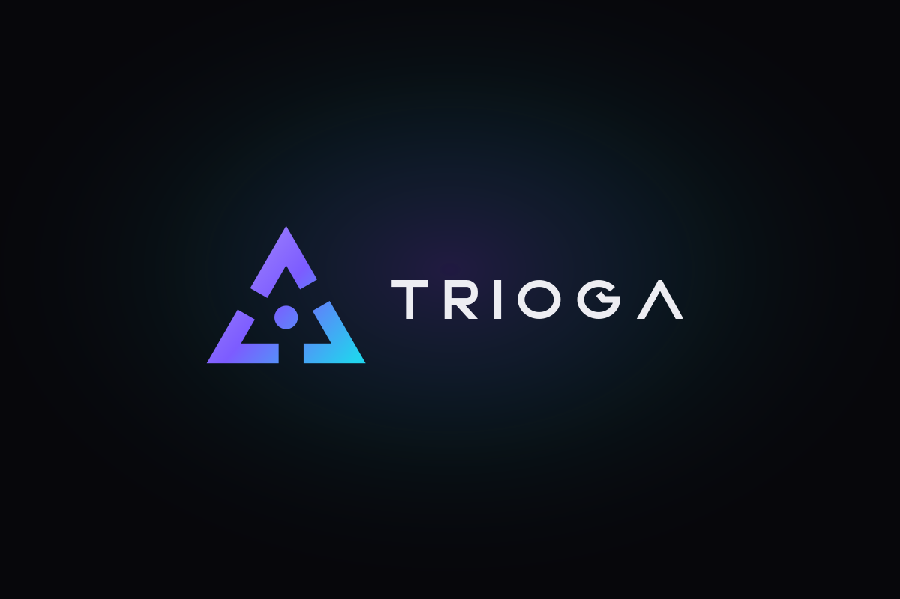
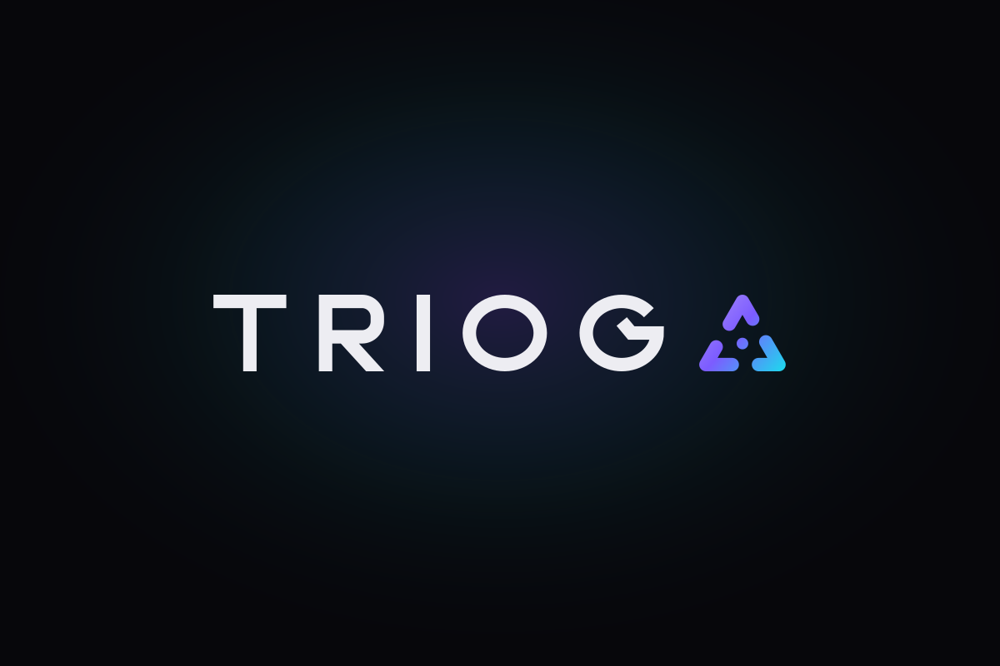
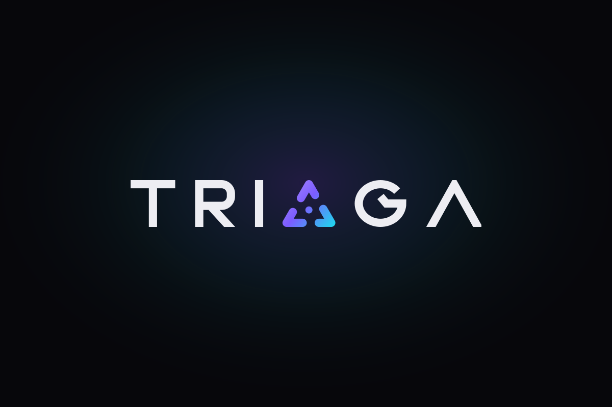
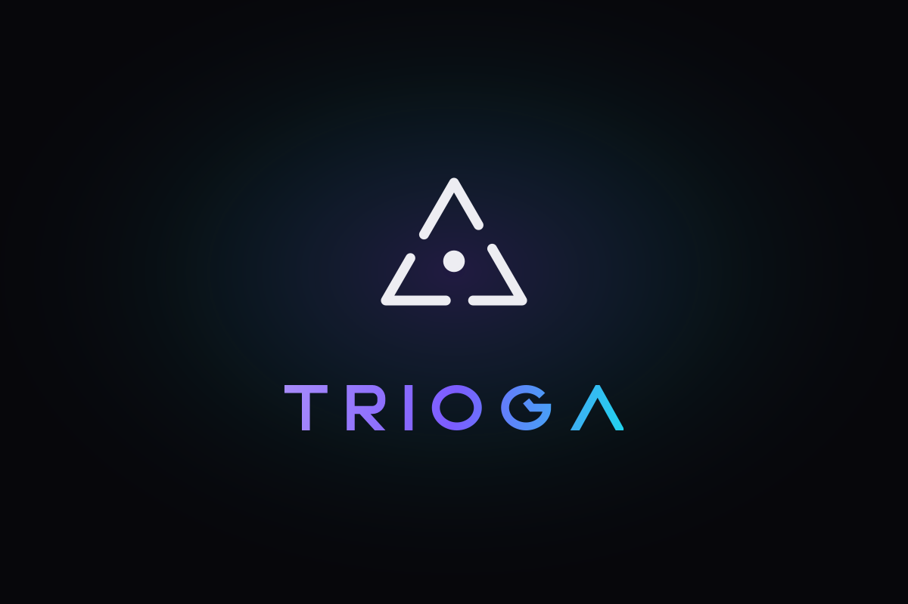
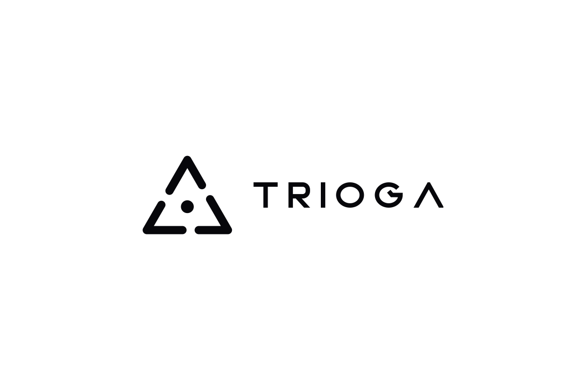
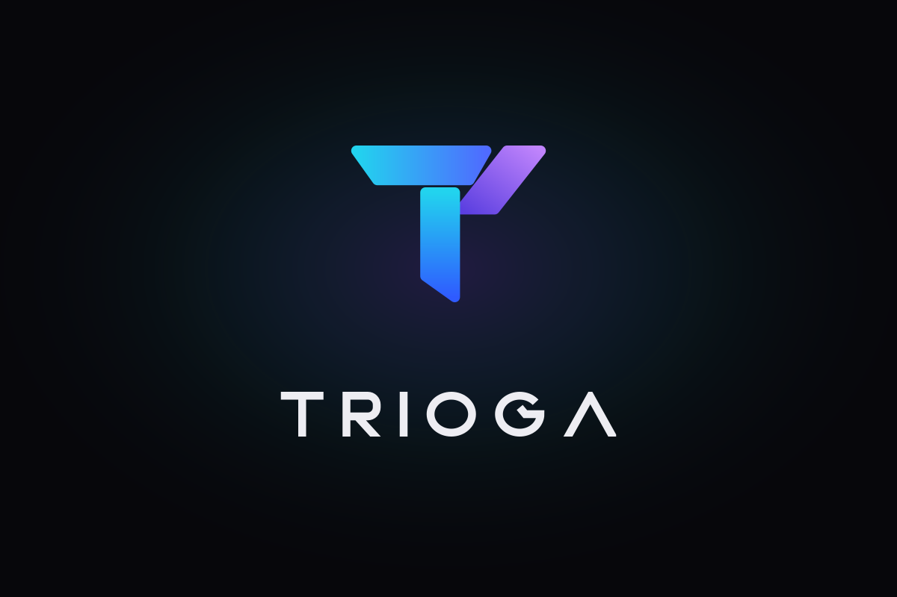

Trioga — logo options
10 lockups using the new wide TRIOGA lettering. Each has an SVG (infinitely sharp), a PNG and a transparent PNG.

1. Classic horizontalCurrent mark beside the wordmark. Best for the website header.
2. StackedMark centred above the wordmark, like your reference. Great for social avatars and pitch decks.
3. App badgeWhite mark on a gradient tile. Doubles as the app/favicon icon.
4. Tri-colour + taglineEach stroke its own colour — one per discipline (web, mobile, software). Tagline justified to the wordmark.
5. Sharp boldHeavier mark with square ends and sharp corners — matches the wordmark's geometry exactly.
6. Integrated AThe mark replaces the A. Compact, memorable, works as a single-line logo.
7. Integrated OThe mark sits in the heart of the name — TRI·GA. Bold, distinctive signature.
8. Gradient wordmarkOutline mark in white, colour moved into the letters. Premium, editorial feel.
9. Monochrome (light)Single-colour ink on white — for documents, invoices, print and embossing.
10. Folded T (new mark)New mark inspired by your reference: three folded ribbons forming a T. Stacked with the wordmark.